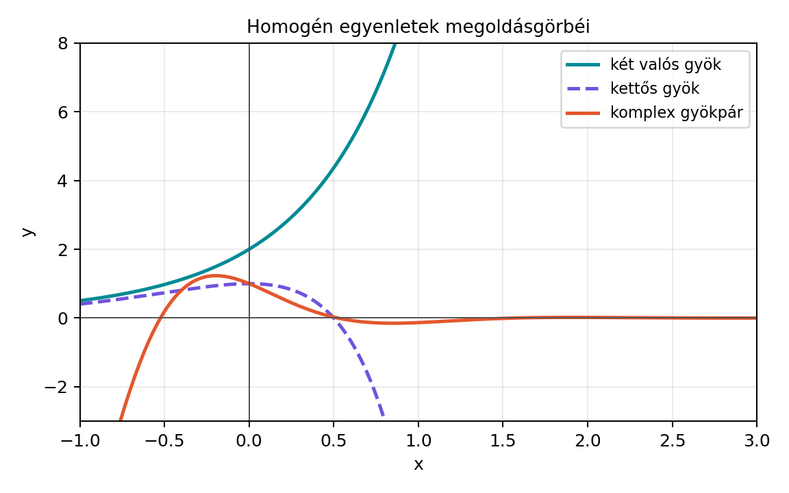

37.1 Homogén lineáris egyenletek
állandó együtthatóval
37.1.1 Motiváció
Egy ingaóra pontossága azon múlik, hogy az inga kis kitérések után
milyen ütemben tér vissza a függőleges helyzetbe. Ha
a függőlegestől mért szögkitérés, akkor kis szögekre a mozgásegyenlet –
amint azt a fizikából ismerjük – közelítőleg
alakú, ahol
a nehézségi gyorsulás,
az inga hossza. Hasonló egyenlet írja le a rugóra akasztott test
rezgését, az RLC-kör feszültségét, sőt számos más műszaki és
természettudományos rendszert. Az ilyen egyenletek közös szerkezete a
másodrendű lineáris homogén differenciálegyenlet állandó
együtthatóval:
ahol
valós állandók és
.
Ebben az alfejezetben zárt megoldóképletet adunk erre az
egyenletosztályra, és megvizsgáljuk, miért éppen három alapvető
gyökesetet különböztetünk meg.
37.1.2 Szemléletes kép
A megoldások jellege a karakterisztikus egyenlet
diszkriminánsától függ. A három esetet a következő táblázat foglalja
össze:
Diszkrimináns
Gyökök
Alaprendszer
Általános megoldás
valós,
,
kettős gyök
,
komplex gyökpár
,
A három eset közötti különbséget a következő ábra szemlélteti: két
valós gyök esetén a megoldás gyorsan nő vagy csökken, kettős gyök esetén
a lineáris tényező miatt lassabban változik, komplex gyökpár esetén
pedig csillapodó (vagy erősödő) rezgést látunk.

Homogén egyenletek megoldásgörbéi - Két
valós gyök: exp(x)+exp(2x); kettős gyök: (1-2x)exp(2x); komplex
gyökpár: exp(-2x)cos(3x). Pontos képletek a példákból, 0,1
lépésközzel számolva.
A függvények pontos képletét a kidolgozott példákban találjuk; az
ábrán jól látszik, hogy a komplex gyökpárhoz tartozó megoldás oszcillál,
míg a valós gyökök esetén a görbék nem rezegnek.
37.1.3 A karakterisztikus
egyenlet
Definíció. Legyenek
valós számok és
.
Az
egyenletet másodrendű lineáris homogén
differenciálegyenletnek nevezzük, ha a függvény és deriváltjai
csak első hatványon, szorzó konstansokkal szerepelnek. A „homogén” jelző
arra utal, hogy az egyenlet jobb oldalán
áll; a „lineáris” arra, hogy a bal oldal lineáris operátor: ha
és
megoldás, akkor
is megoldás.
Mivel az exponenciális függvény deriváltja önmaga többszöröse,
természetes próbafüggvény:
,
ahol
egyelőre ismeretlen konstans. Deriváljuk:
Behelyettesítve az egyenletbe:
Mivel az exponenciális függvény soha nem nulla, a próbafüggvény akkor
és csak akkor megoldás, ha
Ezt az egyenletet karakterisztikus egyenletnek
nevezzük. Gyökeit
-vel
jelöljük. A megoldás jellege attól függ, hogy a diszkrimináns
pozitív, nulla vagy negatív.
37.1.4 A három gyökeset
37.1.4.1 Két valós gyök
Ha
,
akkor a karakterisztikus egyenletnek két különböző valós gyöke van:
.
A fenti levezetés szerint mind
,
mind
megoldás. A linearitás miatt a lineáris kombinációjuk is megoldás, így
az általános megoldás
ahol
tetszőleges valós konstansok.
Példa. Oldjuk meg az
egyenletet, majd keressük meg azt a megoldást, amelyre
és
.
A karakterisztikus egyenlet
.
Ennek gyökei
és
,
tehát az általános megoldás
A kezdeti feltételekhez először deriválunk:
A feltételeket behelyettesítve
-nál:
A két egyenletet kivonva
,
majd
adódik. A keresett partikuláris megoldás
Ellenőrzésként számítsuk ki a deriváltakat:
,
.
Behelyettesítve az egyenletbe:
tehát a megoldás valóban kielégíti az egyenletet.
37.1.4.2 Kettős gyök
Ha
,
akkor a karakterisztikus egyenletnek egyetlen kétszeres gyöke van:
Ekkor
megoldás, de szükségünk van egy második, tőle lineárisan független
megoldásra. A próbálkozás
alakú.
Lemma. Ha
a karakterisztikus egyenlet kettős gyöke, akkor
is megoldása az egyenletnek.
Bizonyítás. Számítsuk ki a deriváltakat:
Behelyettesítve az egyenlet bal oldalába:
Mivel
gyöke a karakterisztikus egyenletnek,
.
Továbbá kettős gyök esetén
,
azaz
,
ahonnan
,
így
is teljesül. Ezért a kifejezés nulla, tehát
valóban megoldás. ∎
Így az általános megoldás kettős gyök esetén
Példa. Oldjuk meg az
egyenletet.
A karakterisztikus egyenlet
,
tehát
kettős gyök. Az általános megoldás
Ha például
és
,
akkor
,
továbbá
így
,
ahonnan
.
A partikuláris megoldás:
37.1.4.3 Komplex gyökpár
Ha
,
akkor a karakterisztikus egyenletnek két komplex gyöke van, amelyek
egymás konjugáltjai:
ahol
A korábbi alfejezetben bevezetett Euler-formula
szerint
ezért a komplex megoldások
Mivel az egyenlet valós együtthatós, ha
komplex megoldás, akkor a valós és képzetes rész,
és
is valós megoldás. Ennek belátásához helyettesítsük be
-t
az egyenletbe, és válasszuk szét a valós és képzetes részeket:
Mivel a bal oldal nulla, a valós rész és a képzetes rész is nulla,
tehát
és
is megoldás. Így a két valós megoldás:
A lineáris kombinációjuk adja az általános megoldást:
Példa. Oldjuk meg az
egyenletet.
A karakterisztikus egyenlet
.
A diszkrimináns
,
tehát komplex gyökök vannak. A megoldóképlettel:
Így
és
,
az általános megoldás
Ez a függvény csillapodó rezgést ír le, mivel az
tényező egyre kisebbé teszi az oszcillációt.
37.1.5 A megoldástér szerkezete és
a Wronski-determináns
A fenti példákban mindig két tetszőleges konstanssal adtuk meg az
általános megoldást. Ez nem véletlen: a másodrendű lineáris homogén
egyenlet megoldásainak halmaza kétdimenziós vektortér,
azaz ha
és
két lineárisan független megoldás, akkor minden megoldás
alakba írható.
Definíció. Az
függvények lineárisan függetlenek az
intervallumon, ha a
azonosság minden
-re
csak akkor teljesül, ha
.
Két lineárisan független megoldást alaprendszernek
(fundamental system) nevezünk.
A lineáris függetlenség ellenőrzésére hatékony eszköz a
Wronski-determináns:
Tétel. Ha van olyan
az
intervallumban, ahol
,
akkor
és
lineárisan függetlenek.
Bizonyítás. Tegyük fel, hogy léteznek
konstansok, amelyekre
minden
-re.
Deriváljuk ezt az azonosságot:
Az
pontban ez egy
-es
lineáris egyenletrendszer a
ismeretlenekre:
Az együtthatómátrix determinánsa éppen
.
Ha ez nem nulla, akkor a rendszernek egyetlen megoldása van:
.
Tehát a függvények lineárisan függetlenek. ∎
Tetszőleges függvényekre a tétel nem fordítható meg: az
és az
Wronski-determinánsa azonosan
(),
mégis lineárisan függetlenek a
intervallumon. Ha viszont
ugyanannak a homogén lineáris egyenletnek a megoldásai, akkor a
megfordítás igaz: ha
valamely
-ban,
akkor a
,
rendszernek van nemtriviális
megoldása; az
megoldás kielégíti az
,
kezdeti feltételeket, ezért az unicitás miatt
,
azaz
lineárisan összefüggők. Megoldásokra tehát a
pontosan az összefüggőséggel ekvivalens (az Abel-formula szerint
,
így
vagy azonosan nulla, vagy sehol sem nulla).
Ellenőrizzük a három gyökesetben, hogy a megadott függvények valóban
alaprendszert alkotnak.
Két valós gyök:
,
.
Ekkor
mert
és az exponenciális függvény nem nulla.
Kettős gyök:
,
.
Ekkor
Komplex gyökpár:
,
.
A deriváltak:
Ebből
mert
.
Mindhárom esetben tehát a megadott függvénypárok lineárisan független
megoldások. Hogy az általános megoldás az összes megoldást lefedi, az az
egzisztencia–unicitás tételből következik:
Tétel. Ha
megoldások és
,
akkor minden megoldás
alakú.
Homogén lineáris egyenlet megoldása állandó
együtthatóval
Hozd az egyenletet
alakra, és ellenőrizd, hogy
.
Írd fel a karakterisztikus egyenletet:
.
Számítsd ki a
diszkriminánst, és oldd meg az egyenletet.
A gyökesetek szerint írd fel az alaprendszert:
:
két valós gyök
,
alaprendszer
,
;
:
kettős gyök, alaprendszer
,
;
:
,
alaprendszer
,
.
Írd fel az általános megoldást a táblázat szerint.
Ha kezdeti feltételek is adottak, deriváld az általános megoldást,
helyettesítsd be a feltételeket, és oldd meg a kapott lineáris
egyenletrendszert
-re.
Ellenőrizd a partikuláris megoldást: deriválással és
behelyettesítéssel győződj meg arról, hogy az egyenlet és a kezdeti
feltételek teljesülnek.
37.1.7 Valós életbeli alkalmazás:
harmonikus oszcillátor, ingaóra
Tekintsünk egy matematikai ingát:
hosszúságú fonálon lógó pontszerű tömeg, amely kis kitérésekkel leng. A
függőlegestől mért szögkitérés legyen
.
A körmozgás dinamikája szerint a mozgásegyenlet
Kis szögeknél
,
így a linearizált egyenlet
Ez a fenti homogén egyenlet speciális esete:
,
,
.
A karakterisztikus egyenlet
melynek gyökei
.
Így
és
,
ahol
a körfrekvencia. Az általános megoldás
vagy gyakran átírva
alakra. A lengés periódusideje
Vegyünk egy
hosszú ingát,
nehézségi gyorsulással. Ekkor
Ez az érték egy másodpercenként egy teljes lengést
jelent, ami az ingaórák működésének alapja. A modell korlátja, hogy csak
kis kitérésekre érvényes; nagy szögeknél a
nem lineáris, és a periódusidő is amplitúdófüggővé válik. Emellett a
közegellenállás és a felfüggesztés súrlódása csillapítást visz a
rendszerbe, ami a következő alfejezetekben tárgyalt módon módosítja a
megoldást.
37.1.8 Python-illusztráció
A SymPy szimbolikus ellenőrzésre alkalmas: megoldja a
karakterisztikus egyenletet, illetve közvetlenül a
differenciálegyenletet.
Kimenet (futtatva: SymPy 1.14.0; más verzióban a tagok sorrendje
eltérhet):
(C1*sin(3*x) + C2*cos(3*x))*exp(-2*x)
A kimenet megegyezik a kézi számolással:
,
,
és a konstansok tetszőlegesek. A kód nem bizonyítás, csupán a levezetés
gyors ellenőrzése.
37.1.9 Tipikus hibák
A karakterisztikus egyenlet hibás felírása.
Például az
egyenletnél sokan
-t
írnak, mert az
együtthatóját nem
-val,
az
együtthatóját pedig nem konstansként veszik. Helyesen:
,
tehát
.
Kettős gyök esetén a második megoldás
elfelejtése. Ha
kettős gyök, csak
-et
írni nem elég, mert így csak egyetlen konstans áll rendelkezésre, és nem
tudunk két kezdeti feltételt kielégíteni. A helyes általános megoldás
.
Komplex gyököknél a
előjelének vagy a szinusz/koszinusz argumentumának keverése. Ha
,
akkor a megoldás
,
és nem
vagy hasonló. A
mindig pozitív valós szám.
A derivált kiszámításánál a szorzat- és láncszabály
elhagyása. Például
deriváltja
,
nem egyszerűen
.
A kezdeti feltételek behelyettesítése előtt mindig gondosan
deriváljunk.
A Wronski-determináns értelmezése. Tetszőleges
függvényekre
-ból
még nem következik összefüggőség (például
és
);
ugyanannak a homogén lineáris egyenletnek két megoldására viszont igen:
ha
egy pontban nulla, a megoldások lineárisan összefüggők.
37.1.10 Önellenőrzés
Írd fel az
egyenlet karakterisztikus egyenletét, és add meg a gyököket!
Mi az
egyenlet általános megoldása?
Az
egyenletnél mennyi
és
?
Számítsd ki a
Wronski-determinánst!
Igaz-e: ha
,
akkor
és
lineárisan összefüggők?
37.1.11 Feladatok
1. feladat (A) Oldd meg az
egyenletet, majd határozd meg azt a megoldását, amelyre
és
.
2. feladat (A) Add meg az
egyenlet általános megoldását.
3. feladat (B) Oldd meg az
egyenletet az
,
kezdeti feltételekkel, és ellenőrizd a megoldást!
4. feladat (B) Számítsd ki a
Wronski-determinánst, és igazold, hogy nem nulla.
5. feladat (C) Bizonyítsd be, hogy ha
valós gyökök, akkor
és
lineárisan függetlenek, és a Wronski-determinánsuk minden
-re
nem nulla.
6. feladat (D) Rugóra akasztott
tömeg mozgását csillapítás nélkül vizsgáljuk. A rugóállandó
,
a kitérést
jelöli, és a mozgásegyenlet
.
A kezdeti feltételek:
,
.
Határozd meg a kitérés-idő függvényt, és számítsd ki a rezgés
periódusidejét!
37.1.12 Megoldások
37.1.12.1 Önellenőrzés –
válaszok
,
gyökök
és
.
Mivel
,
kettős gyök
,
tehát
.
,
tehát
,
.
.
Tetszőleges függvényekre nem feltétlenül (például
és
).
Ha viszont
ugyanannak a homogén lineáris egyenletnek a megoldásai, akkor a
egy pontban már lineáris összefüggőséget jelent.
37.1.12.2 1. feladat
Karakterisztikus egyenlet:
,
tehát
kettős gyök. Az általános megoldás:
A kezdeti feltételhez deriválunk:
-nál:
,
így
.
Továbbá
,
ahonnan
,
tehát
.
A partikuláris megoldás:
Ellenőrzés:
,
;
a deriváltak behelyettesítésével az egyenlet is teljesül.
37.1.12.3 2. feladat
Karakterisztikus egyenlet:
.
A diszkrimináns
.
A gyökök:
Így
,
,
az általános megoldás:
37.1.12.4 3. feladat
Karakterisztikus egyenlet:
,
kettős gyök. Az általános megoldás:
Deriválva:
A kezdeti feltételek:
,
így
;
.
Tehát a megoldás:
Ellenőrzés:
;
,
így
.
Behelyettesítve az egyenletbe:
37.1.12.5 4. feladat
Az Euler-formula szerint
,
.
A deriváltak:
,
.
A Wronski-determináns:
Tehát a két komplex függvény lineárisan független a komplex
függvények terében.
37.1.12.6 5. feladat
Tegyük fel, hogy
minden
-re.
Deriválva:
Az
pontban ez a lineáris rendszer:
Az együtthatómátrix determinánsa
,
mert a gyökök különbözők. Ezért az egyetlen megoldás
,
tehát a függvények lineárisan függetlenek. A Wronski-determináns:
minden valós
-re,
mert az exponenciális függvény nem nulla.
37.1.12.7 6. feladat
A mozgásegyenlet
,
azaz
Karakterisztikus egyenlet:
,
gyökök
.
Így
,
,
az általános megoldás:
Kezdeti feltétel:
,
tehát
.
Deriválva:
így
,
ahonnan
.
A kitérés-idő függvény:
A körfrekvencia
,
a periódusidő:
37.1.13 Rövid összefoglaló
A másodrendű lineáris homogén állandó együtthatós egyenlet általános
alakja